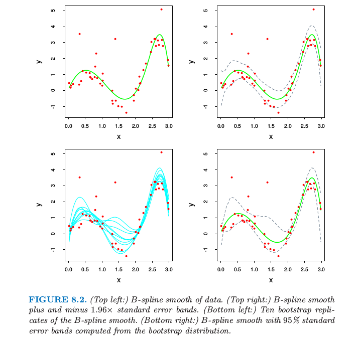
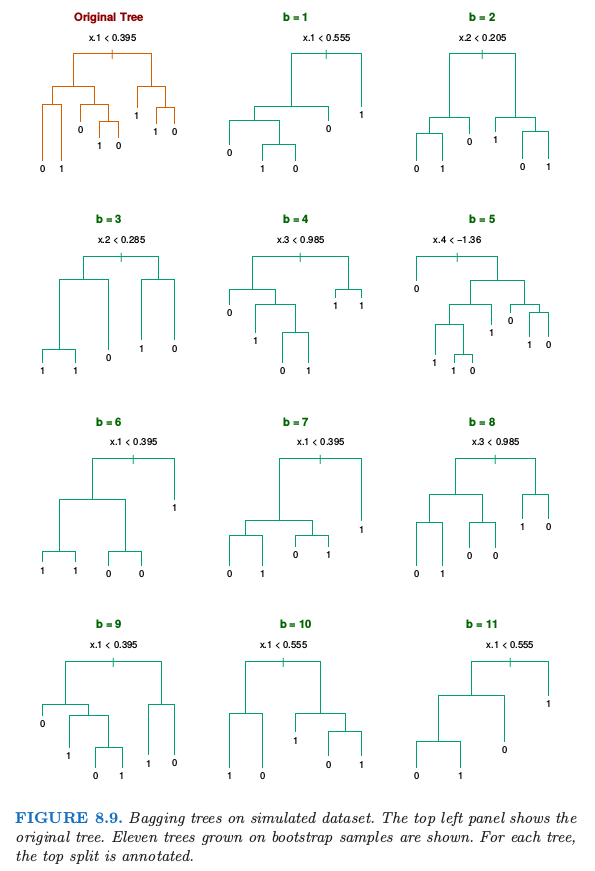
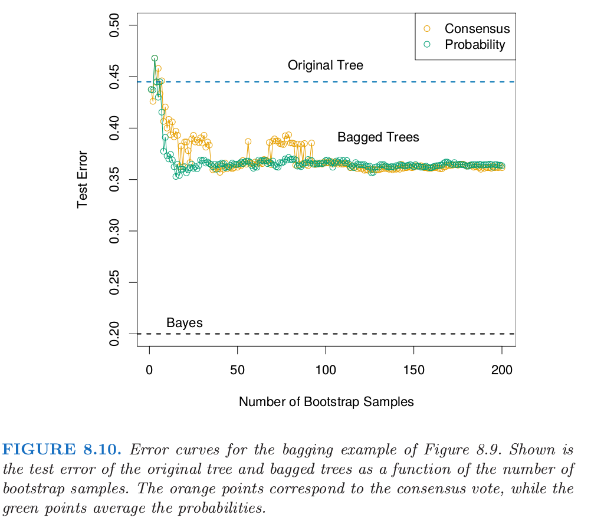
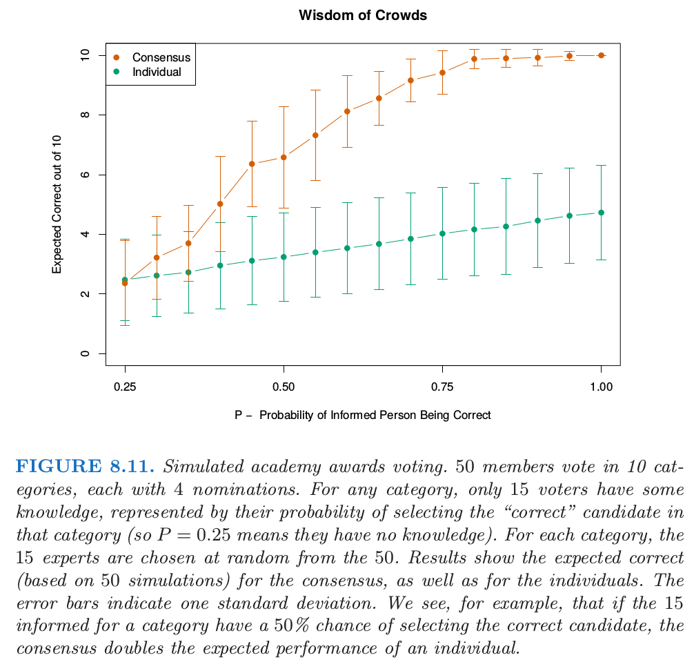
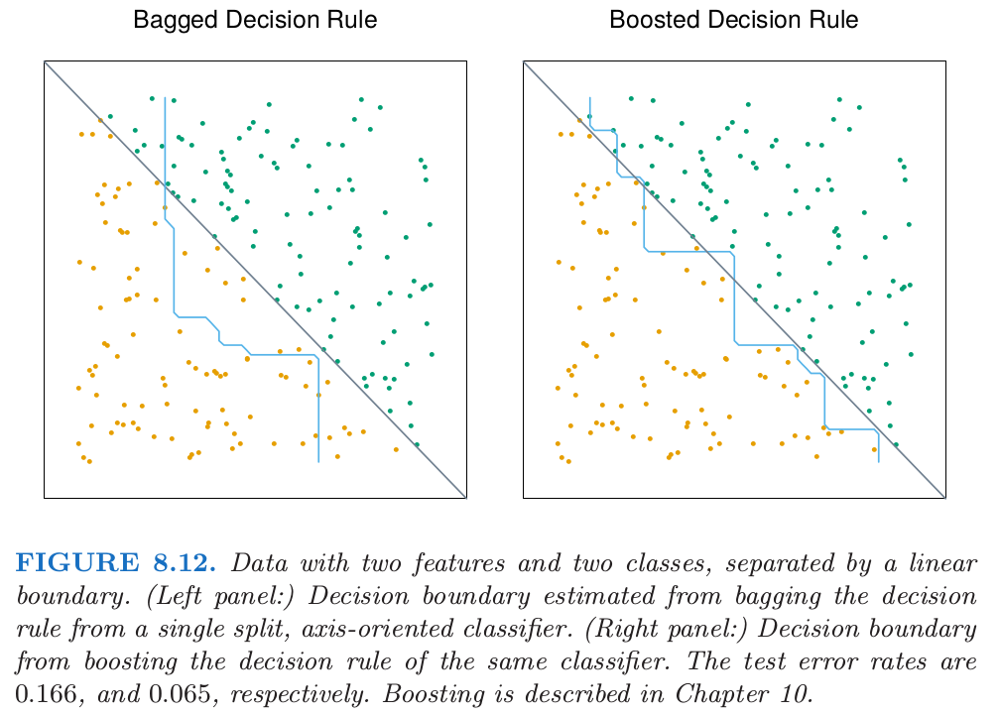

8.7 Bagging
Contents
8.7 Bagging¶
前面我们已经介绍了自助法可用来评估参数估计或预测的正确性。这里我们展示怎么使用自助法去改善估计或者预测本身。在 8.4 节中，我们研究了自助法和贝叶斯方法之间的关系，发现自助法均值近似于一个后验平均，Bagging 进一步探索这之间的联系。
首先考虑一个回归问题。假设我们根据我们的训练数据 \(\mathbf Z=\\{(x_1,y_1),(x_2,y_2),\ldots,(x_N,y_N)\\}\) 拟合一个模型，得到在输入 \(x\) 处的预测值 \(\hat f(x)\)。**自助法整合 (Bootstrap aggregation)**或者 bagging 在自助法样本的集合中平均了这个预测值，因此降低了它的方差。对于每个自助法样本 \(\mathbf Z^{*b},b=1,2,\ldots,B\)，拟合我们的模型得到预测值 \(\hat f^{*b}(x)\)。bagging 估计定义为
记 \(\hat{\mathcal P}\) 为在每个数据点 \((x_i,y_i)\) 上赋予相同概率 \(1/N\) 的经验分布。实际上，“真正”的 bagging 估计由 \(\mathbb{E}_{\hat{\mathcal P}}\hat f^*(x)\) 定义，其中 \(\mathbf Z^*=\\{(x_1^*,y_1^*),(x_2^*,y_2^*),\ldots,(x_N^*,y_N^*)\\}\)，并且每个 \((x_i^*,y_i^*)\in \hat{\mathcal P}\)。当\(B\rightarrow \infty\)，表达式 式（ 8.51 ） 是真实 bagging 估计的蒙特卡洛估计。
bagged 估计 式（ 8.51 ） 与原始估计 \(\hat f(x)\) 仅仅当后者是数据的非线性或者数据的自适应函数才有区别。举个例子，为了 打包 (bag) 8.2.1 节的 B 样条光滑器，我们对图 8.2 的左下图中的曲线在每个 \(x\) 处进行平均。
note “Recall” 
note “Recall”
如果我们固定输入则 \(B\) 样条光滑器关于数据是线性的，因此如果我们采用式 式（ 8.6 ） 给出的参数自助法，则当 \(B\rightarrow \infty\) 时，\(\hat f_{bag}(x)\rightarrow \hat f(x)\)（练习 8.4）。因此 bagging 刚好重现了图 8.2 的左上图中的原光滑曲线。如果我们使用非参自助法来 bagging 结论也近似正确。
一个更有趣的例子是回归树，其中 \(\hat f(x)\) 记为在每个输入向量 \(x\) 处树的预测（回归树在第九章中讨论）。每个自助法树跟比原始特征相比，涉及不同的特征，而且可能会有不同的终止结点。bagged 估计是在 \(x\) 处这 \(B\) 棵树的平均预测值。
现在假设我们的树产生一个用于 \(K\) 个类别响应变量的分类器 \(\hat G(x)\)。这里考虑一个潜在的指示向量函数 \(\hat f(x)\)（\(K\) 维向量，其中有一个 \(1\) 和 \(K-1\) 个 \(0\)）使得 \(\hat G(x)=\mathrm{arg \; max}\_k\;\hat f(x)\) 是很有用的。则袋装估计 \(\hat f_{bag}(x)\) 式（ 8.51 ） 是一个 \(K\) 维向量 \([p_1(x),p_2(x),\ldots,p_K(x)]\)，其中 \(p_k(x)\) 等于在 \(x\) 处预测为类别 \(k\) 的树的比例。bagged 分类器从 \(B\) 棵树中选择得“票”最多的类别，也就是 \(\hat G_{bag}(x)=\mathrm{arg \; max}\_k\; \hat f_{bag}(x)\)。
经常我们需要在 \(x\) 的估计类别概率，而不是分类自身。将投票比例 \(p_k(x)\) 看成是这些概率的估计是很吸引人的。一个简单的二分类的例子显示了它们在这种情形下的失败。假设在 \(x\) 处类别 \(1\) 的真实概率为 \(0.75\)，而且每个 bagging 分类器准确地预测了 \(1\)。于是 \(p_1(x)=1\)，这是不正确的。然而，对于许多分类器 \(\hat G(x)\)，已经有一个估计了 \(x\) 处类别概率的潜在函数 \(\hat f(x)\)（对于树而言，类别的比例即为末结点处的类别比例）。另一种 bagging 策略是对这些结点处的比例取平均而不是对得分指示向量取平均。这个过程不仅仅改善了类别概率的估计，而且趋向于产生低方差的 bagging 分类器，特别是对于小 \(B\)（见下一个例子的图 8.10）
（）例子： 树与模拟数据¶
我们生成规模为 \(N=30\)，两个类别，以及有 \(p=5\) 个特征的样本，每个样本服从标准高斯分布，并且成对相关系数为 \(0.95\)。根据 \(\mathrm{Pr}(Y=1\mid x_1\le 0.5)=0.2\)，\(\mathrm{Pr}(Y=1\mid x_1> 0.5)=0.8\) 生成响应变量 \(Y\)。贝叶斯误差率为 \(0.2\)。同时从相同的总体中生成大小为 \(2000\) 的测试集合。我们对训练样本和 \(200\) 个自助样本拟合分类树（分类树在第九章中有描述）。不使用剪枝技巧。图 8.9 显示了原始的树和 \(11\) 个自助树。

注意到这些树是怎样完全不同的，既有不同的分割特征，也有不同的截断点。原始分类树和 bagged 树的测试误差展现在图 8.10。

在这个例子中，由于预测变量间的相关性，树有很高的方差。Bagging 成功光滑掉方差，也因此降低了测试误差。
Bagging 可以显著降低不稳定的过程的方差得到更好的预测，比如说树。一个简单的论据说明了为什么 bagging 在平方误差损失下有效果，简单来说是因为它保持偏差不变降低了方差。
假设我们的训练样本 \((x_i, y_i),i=1,\ldots,N\) 是从分布 \(\mathcal P\) 中独立采样的，并且考虑理想的整合估计器 \(f_{ag}(x)=\mathbb{E}_{\mathcal P}\hat f^* (x)\)。这里 \(x\) 是固定的，并且自助数据集 \(\mathbf Z^*\) 包含从 \(\mathcal P\) 中采样的的观测 \(x_i^*, y_i^*, i=1,2,\ldots, N\)。注意到 \(f_{ag}(x)\) 是从实际总体 \(\mathcal P\) 中而不是数据中采样得到一个 bagging 估计。实际中这并不是我们可以用的估计，但是用于分析这是很方便的。我们可以写出如下关系
右侧额外的误差来自 \(\hat f^*(x)\) 在 \(f_{ag}(x)\) 附近的方差。因此真实的总体整合不会增加 均方误差 (mean squared error)。这表明从训练样本中采样的 bagging 将会经常降低均方误差。
上面的论据对于 0-1 损失下的分类并不能保证，因为偏差和方差的不可加性。在那种情形下，对一个较好的分类器进行 bagging 会变得更好，但是 bagging 一个差的分类器会变得更差。举个简单采用随机化规则的例子。假设对于所有的 \(x\) 我们都有 \(Y=1\)，并且分类器 \(\hat G(x)\) 以概率 \(0.4\) 预测 \(Y=1\)（对所有 \(x\)），并且以 \(0.6\) 的概率预测\( Y=0\)（对所有 \(x\)）。则 \(\hat G(x)\) 的误分类率为 \(0.6\)，但是 bagged 分类器的误差率为 \(1.0\)。
question “weiya 注：” 所以这个例子失败的原因还是因为对 voting label 进行
bagging？如果像上文所说的对 class probability 进行bagging，是不是应该就没有这个问题了？
对于分类，我们可以就一个独立 弱学习器 (weak learners) 的共识来理解 bagging 的效应 (Dietterich, 2000a1)。令在两类别例子中 \(x\) 处的贝叶斯最优边界为 \(G(x)=1\)。假设每个弱分类器 \(G_b^*\) 的误差率为 \(e_b=e<0.5\)，并令 \(S_1(x)=\sum_{b=1}^BI(G_b^*=1)\) 是类别 \(1\) 的 共识投票 (consensus vote)。因为弱分类器假设是独立的，则 \(S_1(x)\sim B(B, 1-e)\)，并且当 \(B\) 变大时，\(\mathrm{Pr}(S_1>B/2)\rightarrow 1\)。这个概念已经作为“Wisdom of Crowds”流行于统计学之外了 (Surowiecki, 20042) ——多样且独立的人们的群体知识一般会超出任何单个的个体，而且可以用于投票。当然，最主要的警告是“独立”，但 bagged 树不是。图 8.11 说明了在模拟例子中 投票共识 (consensus vote) 的力量，其中只有 \(30\%\) 的投票者对候选者有一些了解。

第 15 章中我们将看到随机森林通过降低被采样的树的相关性来改善bagging。
注意到当我们 bag 一个模型时，模型中任何简单的结构都会丢失。举个例子，bagged 树不再是一棵树。对于模型的解释性来说，这显然是一个缺点。更稳定的过程，如最近邻，一般不会被 bagging 所影响。不幸的是，大都被 bagging 改善的不稳定的模型其实是不稳定的，因为对解释性的重视，而且这在 bagging 过程中会丧失掉。
图 8.12 展示了一个 bagging 不起作用的例子。这 100 个数据点有两个特征和两个类别，被灰色线性边界 \(x_1+x_2=1\) 分隔开。我们选择单个坐标轴定向的分隔作为我们的分类器 \(\hat{\mathbb{G}(x)}\)，选择沿着 \(x_1\) 或 \(x_2\) 那个使得训练误分类误差有最大下降的分割点。
在 50 个自助样本上的 0-1 判别规则进行 bagging 得到的判别边界用蓝色曲线显示在图 8.12 的左面板。在捕捉真实的边界方面做得很差。从训练数据中得到的单个判别规则，分割点在 0 附近（\(x_1\) 或 \(x_2\) 中间的值），因此对于远离中心有很小的贡献。对概率进行平均而不是对分类平均在这里并没有帮助。bagging 从单个分隔规则估计类别的期望概率，也就是，对许多重复实验进行平均。注意到通过 bagging 计算得到的期望类别概率不能被任意单个的实验所重现，这跟一个妇女不能有 2.4 个孩子的道理是一样的。在这个意义下，bagging 以某种方式增加了单个基分类器的模型空间。然而，在这里并没有帮助，而许多其它的例子是需要更大程度地扩大模型类。“boosting”是这样一种方式，这将在第 10 章讨论。图中右面板的判别边界是 boosting 过程的判别边界，而且其大致捕捉到了对角边界。
